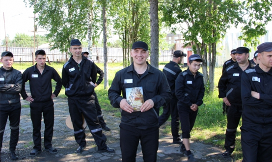
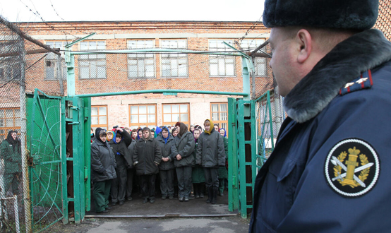

Амнистия
Понятие амнистии можно рассматривать в двух аспектах:
ЦИТАТА
а) амнистия – это освобождение части отбывающих наказание лиц, которые признаются более не опасными для общества.
Это акт государственного милосердия, дающий лицам, совершившим преступление, второй шанс – шанс досрочно выйти на свободу или избежать уголовного наказания. Освобождение от ответственности и наказания по амнистии не связано с сомнениями в обоснованности и законности актов предварительного расследования и приговора суда. Такое освобождение не является основанием для реабилитации лица, оно продолжает считаться обоснованно привлечённым к ответственности, виновным в совершении преступления;
б) амнистия (ст. 84 УК РФ) – это уголовно-правовой акт, принимаемый Государственной Думой (п. «е» ч. 1 ст. 103 Конституции РФ), в котором обозначается круг лиц, подлежащих освобождению от отбывания наказания.
Характерные черты амнистии:
1) объявляется постановлением Государственной Думы Российской Федерации. Одновременно с постановлением об амнистии Государственная Дума РФ принимает постановление, в котором разъясняется порядок применения акта об амнистии и дается его толкование: называются субъекты, на которых возлагается применение акта амнистии к конкретным лицам и т.д.;
2) затрагивает индивидуально не определенный круг лиц: в акте амнистии не содержится поименного перечня конкретных лиц, а определяются только категории, подпадающие под амнистию (участники войны, инвалиды, женщины, несовершеннолетние и т.д.). Круг лиц может сужаться путем указания на категории преступников, которые не подлежат амнистии: например, на осужденных за тяжкие и особо тяжкие преступления, злостных нарушителей порядка отбывания наказания, рецидивистов и т.п. Амнистии могут распространяться как на узкий круг лиц (например, амнистия 1996 г. в отношении лиц, участвовавших в противоправных действиях, связанных с вооруженным конфликтом на территории республики Дагестан), так и на весьма широкий круг лиц (амнистия 1997 г. распространяла действие на 400 тысяч лиц, осужденных условно, 35 тысяч лиц, освобождённых из мест лишения свободы и различные иные категории лиц);
3) влечет за собой уголовно-правовые последствия:
- освобождение от уголовной ответственности лиц, подпадающих под амнистию, по характеру совершенного преступления и личностной характеристике. В отношении этих лиц уголовные дела не подлежат возбуждению, а возбужденные подлежат прекращению;
- освобождение от наказания или его отбывания лиц, подпадающих под амнистию. В данном случае обвинительный приговор не приводится в исполнение;
- сокращение назначенного наказания или замена его более мягким;
- освобождение осужденных, подпадающих под амнистию, от дополнительного вида наказания;
- снятие судимости с уже отбывших наказание лиц, подпадающих под действие акта об амнистии.
Конкретный акт амнистии может предусматривать применение всех перечисленных мер или их части. Кроме того, амнистия может предусматривать освобождение определенных категорий лиц от административной ответственности.
В России, как и в некоторых других странах, принято объявлять амнистию в честь памятных дат, в частности, юбилеев Победы в Великой Отечественной войне (амнистии 1995, 2000, 2005, 2010, 2015 гг.), 100-летия парламентаризма (2006), 20-летия Конституции РФ (2013). С 1992 г. было проведено 18 амнистий, в рамках которых были освобождены от отбывания наказания и от дальнейшего отбывания наказания участники боевых действий, совершившие тяжкие преступления, женщины, мужчины старше 60 лет, инвалиды, лица, осужденные за преступления по неосторожности, подростки, осужденные за нетяжкие преступления, условно осужденные, лица, совершившие экономические преступления, а также превысившие пределы необходимой обороны. Неофициальной, но нередко одной из главных целей объявления амнистий является решение проблемы переполненности мест лишения свободы и следственных изоляторов.
Освобождение от уголовной ответственности и наказания в связи с амнистией является безусловным и окончательным.
Помилование
Помилование (ст. 85 УК РФ) – еще один акт государственного милосердия, применяемый в отношении конкретного лица.
Отличия помилования от амнистии:
1) акт помилования принимается Президентом Российской Федерации (п. «в» ст. 89 Конституции РФ);
2) акт помилования принимается в отношении конкретного лица, осужденного за совершение преступления;
3) помилование инициируется ходатайством самого осужденного, его близких родственников, администрации исправительного учреждения. Ходатайство предварительно рассматривает Комиссия по вопросам помилования при Президенте РФ.
Также к характерным чертам помилования относятся следующие:
- акт помилования не зависит от тяжести совершенного преступления (чаще всего ходатайства о помиловании подаются в случае осуждения к смертной казни, пожизненному лишению свободы). Как правило, помилование не применяется к лицам, совершившим умышленное преступление в период назначенного судом испытательного срока условного осуждения, злостно нарушавшим установленный порядок отбывания наказания, ранее освобождавшимся от отбывания наказания условно-досрочно, по амнистии или актом помилования, а также лицам, которым ранее производилась замена назначенного судом наказания более мягким наказанием;
- акт помилования не связан с отбытием определенного срока наказания;
- последствиями помилования могут быть:
а) освобождение от дальнейшего отбывания наказания;
б) сокращение наказания или замена его более мягким;
в) снятие судимости с лица, отбывшего наказание.
В отличие от ранее действовавшего законодательства, не предусматривается освобождение от уголовной ответственности и замена лишения свободы условным осуждением в порядке помилования. Помилование не может отменить последствия уже исполненных наказаний (например, штрафа или лишения специального, воинского и почётного звания, классного чина и государственных наград). Помилование также не освобождает лицо от гражданской ответственности за причинение вреда.
В 1990-х гг. помилование широко применялось в отношении осужденных к смертной казни в рамках политики постепенного сокращения применения данного вида наказания. В порядке помилования наказание данным лицам заменялось пожизненным лишением свободы или длительными сроками лишения свободы. С 2000 г. помилование применяется в России крайне редко и рассматривается как исключительная мера — не более 10 случаев в год. Например, в 2014-2015 гг. Президент РФ помиловал лишь 7 человек (при числе поданных ходатайств 4,7 тысяч).
Процедура помилования сильно бюрократизированна и включает следующие этапы:
а) осужденный подает письменное ходатайство о помиловании в администрацию учреждения или органа, исполняющего наказание, или следственного изолятора;
б) ходатайство направляется в территориальный орган уголовно-исполнительной системы (Управление ФСИН по субъекту РФ);
в) ходатайство направляется в комиссию по вопросам помилования субъекта РФ для дачи заключения о целесообразности применения акта помилования;
г) ходатайство направляется главе субъекта РФ для внесения Президенту РФ представления о целесообразности применения акта помилования;
д) ходатайство рассматривает и подписывает Президент РФ. В случае отклонения Президентом РФ ходатайства о помиловании повторное рассмотрение обращения осужденного допускается не ранее чем через год, за исключением случаев возникновения новых обстоятельств, имеющих существенное значение для применения акта помилования.